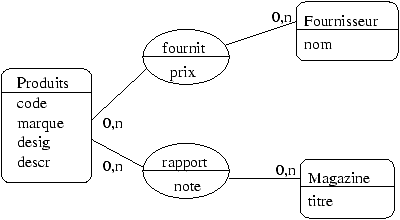
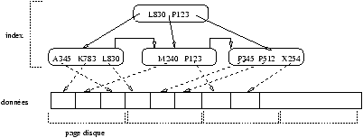
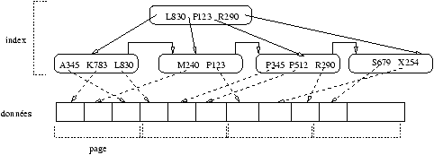

| pcode(s |
|
Produits) |
select marque from Produits, PrixFour where Produits.code=PrixFour.code and four='Darty'
select distinct marque
from Produits
where marque not in (select marque
from Produits, NoteMag
where Produits.code=NoteMag.code
and note='10')
select code, avg(note) from Produits, NoteMag where Produits.code=NoteMag.code and desig='appareil photo numérique' group by code
| NoteMag | ||
| code | titre | note |
| 'A345' | 'HIFI' | 8 |
| 'P123' | 'Audio Expert' | 6 |
| 'X254' | 'HIFI' | 7 |
| 'K783' | 'Son & Audio' | 3 |
| 'P345' | 'HIFI' | 6 |
| 'P512' | 'Audio Expert' | 8 |
| 'L830' | 'Audio Expert' | 8 |
| 'M240' | ''HIFI'' | 6 |


select * from NoteMag where code between 'A000' and 'X000';Pour évaluer cette requête, on suppose que le tampon de lecture peut contenir une seule page et l' index tient en mémoire. Dans ce cas, est-ce qu'il est préférable d'utiliser l'index ou de parcourir la table séquentiellement ? Pourquoi ?
select desig, marque, prix from Produits, PrixFour, NoteMag where Produits.code=PrixFour.code and Produits.code=NoteMag.code and note > 8;
0 SELECT STATEMENT
1 MERGE JOIN
2 SORT JOIN
3 NESTED LOOPS
4 TABLE ACCESS FULL NOTEMAG
5 TABLE ACCESS BY INDEX ROWID PRODUITS
6 INDEX UNIQUE SCAN A34561
7 SORT JOIN
8 TABLE ACCESS FULL PRIXFOUR
Plan d'execution
--------------------------------------------------------------------------------
0 SELECT STATEMENT
1 NESTED LOOPS
2 NESTED LOOPS
3 TABLE ACCESS FULL PRIXFOUR
4 TABLE ACCESS BY INDEX ROWID PRODUITS
5 INDEX UNIQUE SCAN PRODUITS_CODE
6 TABLE ACCESS BY INDEX ROWID NOTEMAG
7 INDEX RANGE SCAN NOTE_MAG
| Commander (c, p, q) | ||
| Start | ||
| Lecture prix produit p | ||
| si q > stock de p alors Abort | ||
| sinon | ||
| Mise à jour stock de p | ||
| Enregistrement dans c du total de facturation | ||
| Commit | ||
| fin si |
T: r[x] r[y] a T': r[x] a T'': r[x] w[y] w[z] c T''': r[x] r[y] w[y] w[z] c
Ce document a été traduit de LATEX par HEVEA.